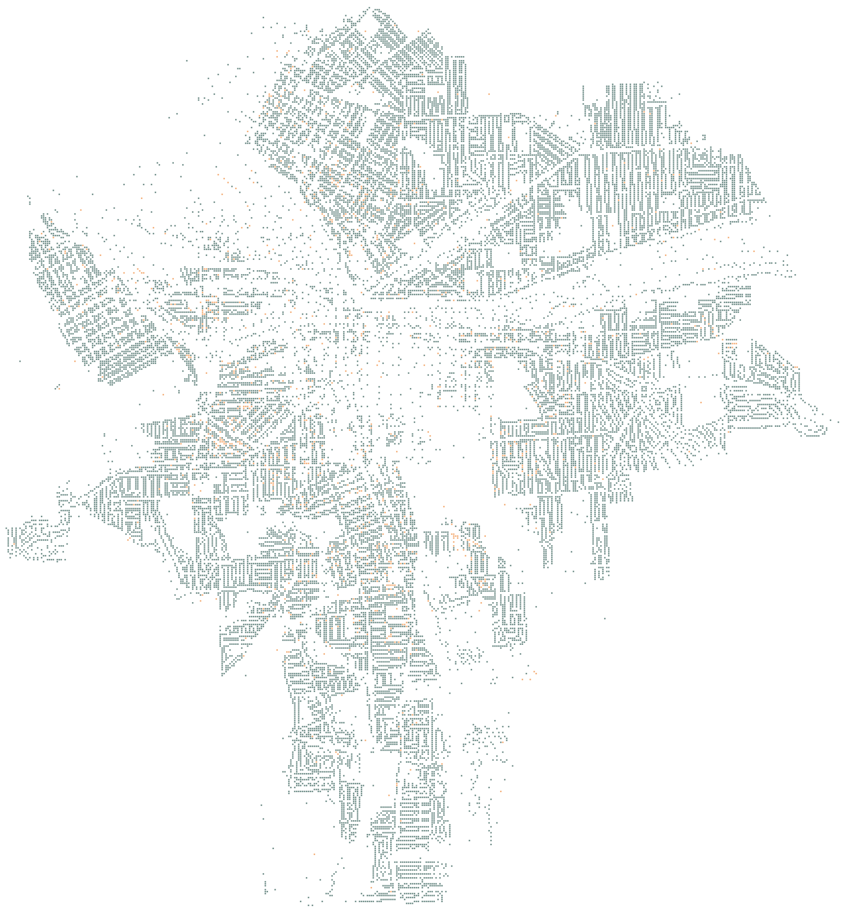

Comparing the same tax IDs in 2017 and 2026.
Continuity of land use does not mean the same residents, owners, or building conditions.
A CITY IN 13 SNAPSHOTS · 2017—2026
A city changes one address at a time.
Some places find a new purpose. Others hold
onto the character of a neighborhood.
Nine years of property records. Thousands of small stories.
Start with the city. Find your own corner of it.

Reading the parcel archive…
01 / THE CITY THAT STAYED
Look past the biggest projects and a familiar city remains: streets of houses, two-family homes, and the older buildings that give a neighborhood its shape.
Comparing the same tax IDs in 2017 and 2026.
Continuity of land use does not mean the same residents, owners, or building conditions.
THE AGE OF THE CITY
Construction years are recorded attributes, not verified building histories. Unknown years stay in the picture.
02 / WHAT CHANGED ON YOUR BLOCK?
Choose two snapshots. Search an address, pick a neighborhood, or click a parcel. Each dot is a property record; zoom in to see the latest available parcel outlines.
This filter checks the entire 2017–2026 archive, independently of the two comparison dates.
Outlines show the latest available geometry for each tax ID. Missing or changed IDs do not establish construction, demolition, or sale.
03 / VACANT LAND HAS MORE THAN ONE STORY
A parcel can become housing, a park, or parking. It can also remain vacant land. Follow the recorded paths between 2017 and 2026.
Same tax ID.
A new use—or a familiar one.
single- and two-family records became vacant-land records.
These are recorded classifications, not verified demolition or construction counts. Click a path to find its parcels on the map.
VACANT LAND / THROUGHOUT THE ARCHIVE
—VACANT BUILDINGS / THROUGHOUT THE ARCHIVE
—“Throughout” means every available snapshot with the relevant field, not verified continuous vacancy between observations. August 2024 has neither field. Missing records or blank flags do not qualify.
04 / THE MANY LIVES OF ONE ADDRESS
The records offer clues. These timelines show when a different classification first appears in the files—not the date a building opened or work began.
LAKEFRONT / HOUSING
From vacant land to commercial to apartment: a parcel whose recorded role changed dramatically. By Q1 2024, the file records 112 housing units.
TIPP HILL / PUBLIC SPACE
Development is not the only way land finds a new purpose. This record shifts from vacant land to parks between the 2020 and 2023 snapshots.
MEADOWBROOK / ONE HOME
A city also changes in increments of one. This parcel moves from vacant land to single-family use between July 2018 and October 2019.
05 / NEIGHBORHOOD COUSINS
Compare the fabric of two neighborhoods. The same measures, side by side—without turning places into a ranking.
Latest recorded neighborhood assignments are held fixed for matched-parcel comparisons. Tax blocks and street-address groups are available inside each property timeline; neither necessarily describes a physical city block.
READING THE RECORDS
The archive runs from August 2017 to October 2026, with no snapshots between Q1 2020 and November 2023. Dates describe the supplied exports. Changes may have happened earlier.
Between January and October 2026, 556 matching records change from Meadowbrook to Salt Springs. Holding neighborhood assignments fixed keeps that shift from masquerading as development.
Comparisons join string-valued tax IDs. Duplicate IDs are excluded for the affected snapshot. Missing values remain unknown. The August 2024 export lacks most story attributes.
Assessed values are not sale prices. Recorded owner-name changes do not prove a sale. Early unit counts are inconsistent, so unit comparisons start with usable later files. Vacant land and a vacant building are different classifications.
The map uses the latest available location and outline for each tax ID; it does not reconstruct parcel splits or mergers. Unmatched records are shown separately. The opening illustration groups nearby parcel locations for readability. Original field values and snapshot references are available in each property timeline.